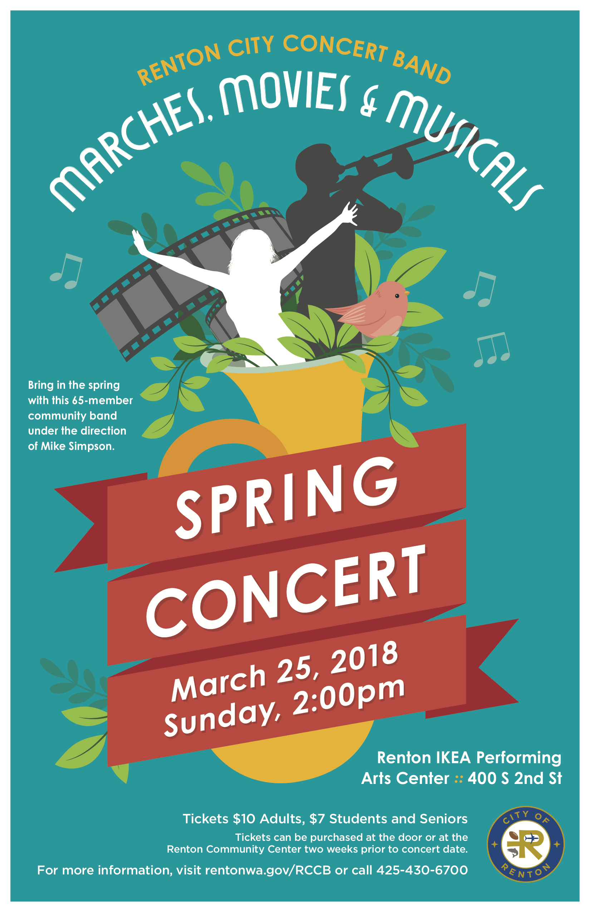

What began in 1986, has grown to what is now the Renton City Concert Band as the Renton Parks and Recreation Community Band on November 13, . The band was born from a brainstorming session between several great musicians in the Renton area. Randy Rockhill, Jim Young, Harley Brumbaugh, and several others started talking about needing an outlet for all the wonderful band musicians that lived in the greater Renton area. They decided to invite a bunch of community musicians to get together at the Renton High School Band Room for some music reading sessions. They were encouraged by the enthusiasm that these bandsmen brought to the rehearsals on Thursday nights.
Eventually, it was decided that Harley Brumbaugh should lead the group, and the band wanted to do more than practice. They wanted to perform!
At the first performance, the band members outnumbered the audience. Through hard work, enthusiasm, loyalty and dedication, the Renton City Concert Band has grown to be an integral part of the arts scene in Renton. With solid support from Renton city officials and the Renton Recreation Department, the band has grown to a group of 60 to 70 members who represent some of the finest instrumentalists in the Puget Sound region.
Several of those original hearty souls that were at the first rehearsal of the band remain with the group today, over twenty five years later. Harley Brumbaugh handed over the director’s baton to Mike Simpson, the band’s current conductor in 2004. Jim Young retired to Bellingham, handing over the concertmaster chores to Sue Tierney. Randy Rockhill’s legacy of community music remains alive as the band plays on.
Past Performances
March, Movies & Musicals - 3/25/2018
